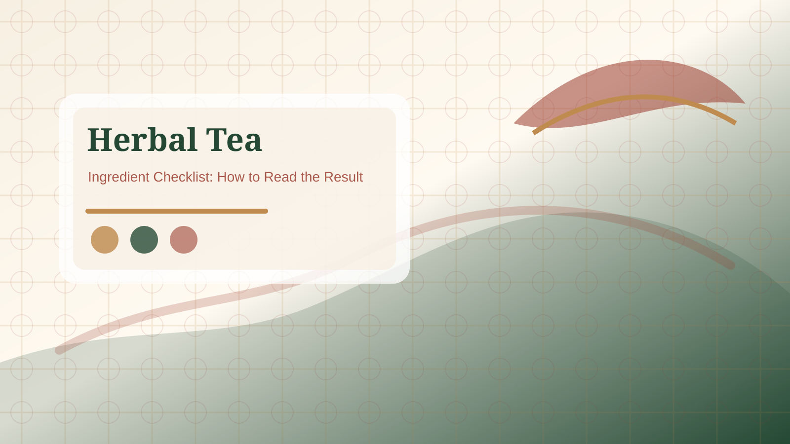

Ginger-forward blend
Best when you want a spicy, warming cup and the ingredient list clearly features ginger.

Use warm-flavor tea bags after meals as a taste and routine choice, not as a digestion or health promise.
Quick Answer: After-meal herbal tea bags are best chosen for warm flavor notes such as ginger, jujube, citrus peel, cinnamon-style spice, roasted grain, or mint. Treat them as a pleasant beverage routine, not as a digestive treatment or health result.

An after-meal tea does not need to be complicated. Choose a stronger ginger, jujube, cinnamon-style, or roasted note when the meal was rich or when you want a more substantial cup. Choose mint, citrus peel, or light fruit notes when you want a cleaner finish. If the product name sounds warm but the ingredient list puts that flavor near the end, expect a lighter taste.
After a meal, convenience matters. Tea bags should steep cleanly, fit a normal mug, and avoid messy residue. Individually wrapped bags can be useful in a shared kitchen or office. A resealable pouch can work at home if you use it often. Check steeping time because some root or spice blends need longer to taste full.
Many shoppers associate ginger or mint with digestion language. This page keeps the boundary clear: warm-flavor herbal tea is a beverage choice. It may feel pleasant after a meal, but it is not medical advice and does not diagnose, treat, or prevent digestive problems.
Choose the cup by meal and timing. After a heavy meal, a stronger ginger, roasted, or spice note may taste more satisfying. After a lighter meal, citrus peel, mint, or fruit-forward blends may feel cleaner. If the cup is late at night, caffeine wording matters more than the warm flavor name. If the product is for guests, avoid very sharp spice unless the box includes milder alternatives. These checks keep the recommendation practical without turning the tea into a digestive promise.
Before adding an after-meal tea bag to a cart, compare three real products side by side. Note the first ingredient, the warm flavor note, caffeine wording, wrapper style, and steeping time. If two boxes look similar, prefer the one with clearer ingredient language and fewer unsupported claims. This small comparison is often more useful than choosing by the strongest product name.
Reference: NCCIH herbs and supplement safety overview.
Best when you want a spicy, warming cup and the ingredient list clearly features ginger.
Best when you want a lighter, brighter finish after food.
Best when you want a deeper, rounder taste that feels less floral.
This page discusses beverage flavor and routine fit only. It does not make digestive or medical claims.
Common options include ginger, jujube, citrus peel, cinnamon-style spice, roasted grain, and mint.
Yes. Ingredients listed earlier usually contribute more to taste than ingredients listed near the end.
Often yes, but check caffeine wording and choose a flavor strength that fits your evening routine.